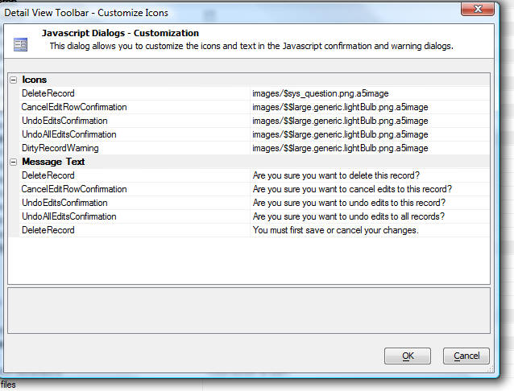

Javascript Dialogs - Customization
You can customize the messages and icons used in the the Javascript dialogs. For example, the Delete Record confirmation dialog shown below has been customized:

To customize the Javascript dialogs, click the smart field for the 'Javascript windows' prompt in the 'Customization' section in the Grid Properties pane.
